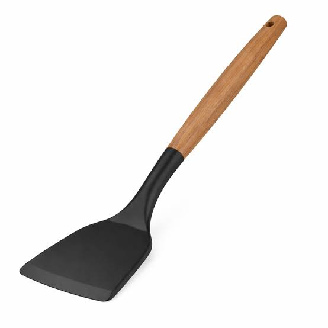
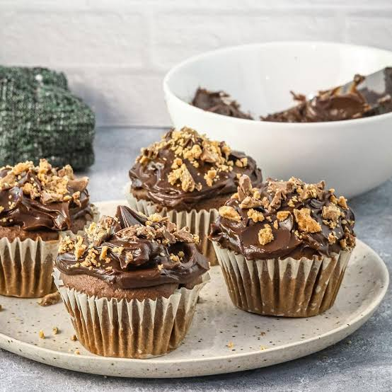

04/09/08: Spatulas

I went to the kitchen shop for one spatula and spent twenty minutes comparing handles. The simplest one felt best: light, easy to hold and ready for Saturday pancakes.
At home, I tried it on a stubborn pancake. One gentle lift, one confident flip and breakfast finally stayed in one piece. A small purchase made an ordinary morning better.
04/08/08: Cookie Cupcakes

Today's baking idea was simple: put a little cookie on top of each cupcake. The first batch leaned sideways, and the kitchen looked as though a bag of flour had exploded.
My friends arrived before I finished cleaning. We shared the warm cakes, compared our favourite toppings and saved two for tomorrow. I had planned to make a perfect dessert; instead, I made a very happy afternoon.